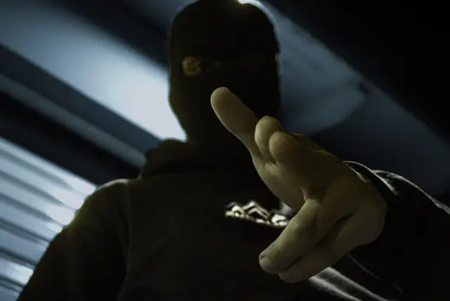
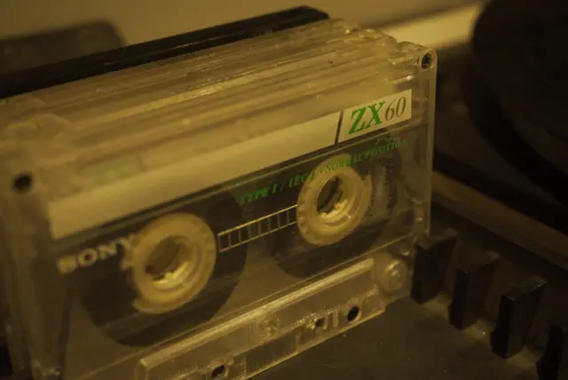
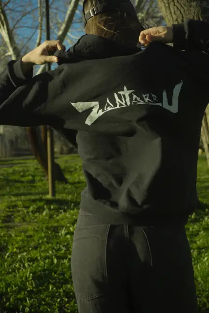
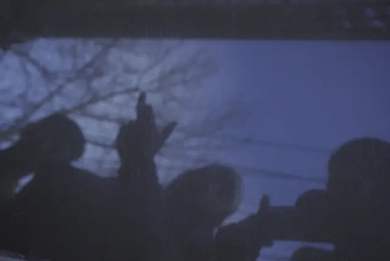
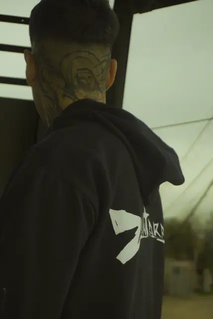

EXPEDIENTE N° 0299-ZKCONFIRMADO
MATCH 99.7% · IDENTIDAD CONFIRMADA
- NOMBRE
- Bruno ████ [REDACTADO]
- EDAD
- [CLASIFICADO]
- ORIGEN
- Neuquén Capital · AR
- OCUPACIÓN
- Fotógrafo
- ARMAS
- Cámara, rollo de 35mm
- AMENAZA
- MUY ALTA
- ÚLTIMA TOMA
- Neuquén
EVIDENCIA RECOLECTADA [05]




